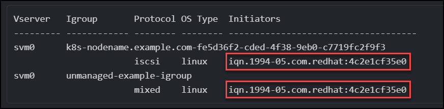

릴리스 정보
릴리스 정보
볼륨 가져오기
 변경 제안
변경 제안
tridentctl import를 사용하여 기존 스토리지 볼륨을 Kubernetes PV로 가져올 수 있습니다.
개요 및 고려 사항
다음과 같은 작업을 위해 Astra Trident로 볼륨을 가져올 수 있습니다.
-
응용 프로그램을 Containerize 하고 기존 데이터 집합을 다시 사용합니다
-
수명이 짧은 애플리케이션에 사용할 데이터 세트의 클론을 사용합니다
-
오류가 발생한 Kubernetes 클러스터를 재구성합니다
-
재해 복구 중에 애플리케이션 데이터 마이그레이션
볼륨을 가져오기 전에 다음 고려 사항을 검토하십시오.
-
Astra Trident는 RW(읽기-쓰기) 유형의 ONTAP 볼륨만 가져올 수 있습니다. DP(데이터 보호) 유형 볼륨은 SnapMirror 대상 볼륨입니다. Astra Trident로 볼륨을 가져오기 전에 미러 관계를 끊어야 합니다.
-
활성 연결이 없는 볼륨을 가져오는 것이 좋습니다. 활성 볼륨을 가져오려면 볼륨을 클론한 다음 가져오기를 수행합니다.

Kubernetes가 이전 연결을 인식하지 못하고 활성 볼륨을 POD에 쉽게 연결할 수 있기 때문에 블록 볼륨에서 특히 중요합니다. 이로 인해 데이터가 손상될 수 있습니다. -
하지만
StorageClassPVC에 지정해야 하며 Astra Trident는 가져오는 동안 이 매개 변수를 사용하지 않습니다. 스토리지 클래스는 볼륨 생성 중에 스토리지 특성에 따라 사용 가능한 풀에서 선택하는 데 사용됩니다. 볼륨이 이미 있으므로 가져오는 동안 풀을 선택할 필요가 없습니다. 따라서 볼륨이 PVC에 지정된 스토리지 클래스와 일치하지 않는 백엔드 또는 풀에 있더라도 가져오기에 실패합니다. -
기존 체적 크기는 PVC에서 결정되고 설정됩니다. 스토리지 드라이버에서 볼륨을 가져온 후 PV는 PVC에 대한 ClaimRef를 사용하여 생성됩니다.
-
처음에 부가세 반환 청구액 정책이 로 설정되어 있습니다
retainPV에서 Kubernetes에서 PVC 및 PV를 성공적으로 바인딩하면 스토리지 클래스의 부가세 반환 청구액 정책에 맞게 부가세 반환 청구액 정책이 업데이트됩니다. -
스토리지 클래스의 부가세 반환 청구액 정책이 인 경우
delete, PV 삭제 시 저장 볼륨이 삭제된다.
-
-
기본적으로 Astra Trident는 PVC를 관리하고 백엔드에서 FlexVol 및 LUN의 이름을 바꿉니다. 을(를) 통과할 수 있습니다
--no-manage관리되지 않는 볼륨을 가져오려면 플래그를 지정합니다. 를 사용하는 경우--no-manage, Astra Trident는 개체의 수명 주기 동안 PVC 또는 PV에 대한 추가 작업을 수행하지 않습니다. PV가 삭제되어도 스토리지 볼륨은 삭제되지 않으며 볼륨 클론 및 볼륨 크기 조정과 같은 다른 작업도 무시됩니다.
이 옵션은 컨테이너화된 워크로드에 Kubernetes를 사용하고, 그렇지 않고 Kubernetes 외부 스토리지 볼륨의 라이프사이클을 관리하려는 경우에 유용합니다. -
PVC 및 PV에 주석이 추가되어 용적을 가져온 후 PVC와 PV가 관리되었는지 여부를 나타내는 두 가지 목적으로 사용됩니다. 이 주석은 수정하거나 제거할 수 없습니다.
볼륨을 가져옵니다
을 사용할 수 있습니다 tridentctl import 를 눌러 볼륨을 가져옵니다.
-
영구 볼륨 클레임(PVC) 파일(예:
pvc.yaml)를 사용하여 PVC를 생성합니다. PVC 파일에는 다음이 포함되어야 합니다name,namespace,accessModes, 및storageClassName. 선택적으로 을 지정할 수 있습니다unixPermissionsPVC 정의.다음은 최소 사양의 예입니다.
kind: PersistentVolumeClaim apiVersion: v1 metadata: name: my_claim namespace: my_namespace spec: accessModes: - ReadWriteOnce storageClassName: my_storage_class
PV 이름 또는 볼륨 크기와 같은 추가 매개 변수는 포함하지 마십시오. 이로 인해 가져오기 명령이 실패할 수 있습니다. -
를 사용합니다
tridentctl import볼륨을 포함하는 Astra Trident 백엔드의 이름과 스토리지에서 볼륨을 고유하게 식별하는 이름(예: ONTAP FlexVol, Element Volume, Cloud Volumes Service 경로)을 지정하는 명령입니다. 를 클릭합니다-fPVC 파일의 경로를 지정하려면 인수가 필요합니다.tridentctl import volume <backendName> <volumeName> -f <path-to-pvc-file>
예
지원되는 드라이버에 대한 다음 볼륨 가져오기 예를 검토하십시오.
ONTAP NAS 및 ONTAP NAS FlexGroup를 지원합니다
Astra Trident는 를 사용하여 볼륨 가져오기를 지원합니다 ontap-nas 및 ontap-nas-flexgroup 드라이버.

|
|
ONTAP-NAS 드라이버로 생성된 각 볼륨은 ONTAP 클러스터의 FlexVol입니다. ONTAP-NAS 드라이버를 사용하여 FlexVol을 가져오는 작업은 동일합니다. ONTAP 클러스터에 이미 존재하는 FlexVol은 ONTAP-NAS PVC로 수입할 수 있다. 마찬가지로 FlexGroup vols는 ONTAP-NAS-Flexgroup PVC로 가져올 수 있습니다.
다음은 관리되는 볼륨 및 관리되지 않는 볼륨 가져오기의 예입니다.
다음 예에서는 라는 볼륨을 가져옵니다 managed_volume 백엔드에서 을(를) 선택합니다 ontap_nas:
tridentctl import volume ontap_nas managed_volume -f <path-to-pvc-file> +------------------------------------------+---------+---------------+----------+--------------------------------------+--------+---------+ | NAME | SIZE | STORAGE CLASS | PROTOCOL | BACKEND UUID | STATE | MANAGED | +------------------------------------------+---------+---------------+----------+--------------------------------------+--------+---------+ | pvc-bf5ad463-afbb-11e9-8d9f-5254004dfdb7 | 1.0 GiB | standard | file | c5a6f6a4-b052-423b-80d4-8fb491a14a22 | online | true | +------------------------------------------+---------+---------------+----------+--------------------------------------+--------+---------+
를 사용할 때 --no-manage argument, Astra Trident는 볼륨의 이름을 바꾸지 않습니다.
다음 예에서는 를 가져옵니다 unmanaged_volume 를 누릅니다 ontap_nas 백엔드:
tridentctl import volume nas_blog unmanaged_volume -f <path-to-pvc-file> --no-manage +------------------------------------------+---------+---------------+----------+--------------------------------------+--------+---------+ | NAME | SIZE | STORAGE CLASS | PROTOCOL | BACKEND UUID | STATE | MANAGED | +------------------------------------------+---------+---------------+----------+--------------------------------------+--------+---------+ | pvc-df07d542-afbc-11e9-8d9f-5254004dfdb7 | 1.0 GiB | standard | file | c5a6f6a4-b052-423b-80d4-8fb491a14a22 | online | false | +------------------------------------------+---------+---------------+----------+--------------------------------------+--------+---------+
ONTAP SAN
Astra Trident는 를 사용하여 볼륨 가져오기를 지원합니다 ontap-san 드라이버. 에서는 볼륨 가져오기가 지원되지 않습니다 ontap-san-economy 드라이버.
Astra Trident는 단일 LUN이 포함된 ONTAP SAN FlexVol을 가져올 수 있습니다. 이는 와 일치합니다 ontap-san 드라이버 - 각 PVC 및 FlexVol 내의 LUN에 대한 FlexVol를 생성합니다. Astra Trident는 FlexVol를 불러와 PVC 정의와 연결합니다.
다음은 관리되는 볼륨 및 관리되지 않는 볼륨 가져오기의 예입니다.
관리 볼륨의 경우 Astra Trident가 FlexVol의 이름을 로 바꿉니다 pvc-<uuid> 및 FlexVol 내의 LUN을 에 포맷합니다 lun0.
다음 예제에서는 을 가져옵니다 ontap-san-managed 에 있는 FlexVol입니다 ontap_san_default 백엔드:
tridentctl import volume ontapsan_san_default ontap-san-managed -f pvc-basic-import.yaml -n trident -d +------------------------------------------+--------+---------------+----------+--------------------------------------+--------+---------+ | NAME | SIZE | STORAGE CLASS | PROTOCOL | BACKEND UUID | STATE | MANAGED | +------------------------------------------+--------+---------------+----------+--------------------------------------+--------+---------+ | pvc-d6ee4f54-4e40-4454-92fd-d00fc228d74a | 20 MiB | basic | block | cd394786-ddd5-4470-adc3-10c5ce4ca757 | online | true | +------------------------------------------+--------+---------------+----------+--------------------------------------+--------+---------+
다음 예에서는 를 가져옵니다 unmanaged_example_volume 를 누릅니다 ontap_san 백엔드:
tridentctl import volume -n trident san_blog unmanaged_example_volume -f pvc-import.yaml --no-manage +------------------------------------------+---------+---------------+----------+--------------------------------------+--------+---------+ | NAME | SIZE | STORAGE CLASS | PROTOCOL | BACKEND UUID | STATE | MANAGED | +------------------------------------------+---------+---------------+----------+--------------------------------------+--------+---------+ | pvc-1fc999c9-ce8c-459c-82e4-ed4380a4b228 | 1.0 GiB | san-blog | block | e3275890-7d80-4af6-90cc-c7a0759f555a | online | false | +------------------------------------------+---------+---------------+----------+--------------------------------------+--------+---------+
다음 예에 표시된 것처럼 IQN을 Kubernetes 노드 IQN과 공유하는 igroup에 LUN이 매핑되어 있는 경우 오류가 발생합니다. LUN already mapped to initiator(s) in this group. 볼륨을 가져오려면 이니시에이터를 제거하거나 LUN 매핑을 해제해야 합니다.

요소
Astra Trident는 를 사용하여 NetApp Element 소프트웨어 및 NetApp HCI 볼륨 가져오기를 지원합니다 solidfire-san 드라이버.
|
|
Element 드라이버는 중복 볼륨 이름을 지원합니다. 그러나 중복 볼륨 이름이 있는 경우 Astra Trident에서 오류를 반환합니다. 이 문제를 해결하려면 볼륨을 클론하고 고유한 볼륨 이름을 제공한 다음 복제된 볼륨을 가져옵니다. |
다음 예제에서는 을 가져옵니다 element-managed 백엔드의 볼륨 element_default.
tridentctl import volume element_default element-managed -f pvc-basic-import.yaml -n trident -d +------------------------------------------+--------+---------------+----------+--------------------------------------+--------+---------+ | NAME | SIZE | STORAGE CLASS | PROTOCOL | BACKEND UUID | STATE | MANAGED | +------------------------------------------+--------+---------------+----------+--------------------------------------+--------+---------+ | pvc-970ce1ca-2096-4ecd-8545-ac7edc24a8fe | 10 GiB | basic-element | block | d3ba047a-ea0b-43f9-9c42-e38e58301c49 | online | true | +------------------------------------------+--------+---------------+----------+--------------------------------------+--------+---------+
Google 클라우드 플랫폼
Astra Trident는 를 사용하여 볼륨 가져오기를 지원합니다 gcp-cvs 드라이버.
|
|
Google Cloud Platform에서 NetApp Cloud Volumes Service가 지원하는 볼륨을 가져오려면 해당 볼륨 경로를 기준으로 볼륨을 식별합니다. 볼륨 경로는 이후 볼륨 내보내기 경로의 일부입니다 :/. 예를 들어, 내보내기 경로가 인 경우 10.0.0.1:/adroit-jolly-swift, 볼륨 경로는 입니다 adroit-jolly-swift.
|
다음 예제에서는 을 가져옵니다 gcp-cvs 백엔드의 볼륨 gcpcvs_YEppr 볼륨 경로 포함 adroit-jolly-swift.
tridentctl import volume gcpcvs_YEppr adroit-jolly-swift -f <path-to-pvc-file> -n trident +------------------------------------------+--------+---------------+----------+--------------------------------------+--------+---------+ | NAME | SIZE | STORAGE CLASS | PROTOCOL | BACKEND UUID | STATE | MANAGED | +------------------------------------------+--------+---------------+----------+--------------------------------------+--------+---------+ | pvc-a46ccab7-44aa-4433-94b1-e47fc8c0fa55 | 93 GiB | gcp-storage | file | e1a6e65b-299e-4568-ad05-4f0a105c888f | online | true | +------------------------------------------+--------+---------------+----------+--------------------------------------+--------+---------+
Azure NetApp Files
Astra Trident는 를 사용하여 볼륨 가져오기를 지원합니다 azure-netapp-files 드라이버.
|
|
Azure NetApp Files 볼륨을 가져오려면 해당 볼륨 경로를 기준으로 볼륨을 식별합니다. 볼륨 경로는 이후 볼륨 내보내기 경로의 일부입니다 :/. 예를 들어, 마운트 경로가 인 경우 10.0.0.2:/importvol1, 볼륨 경로는 입니다 importvol1.
|
다음 예제에서는 을 가져옵니다 azure-netapp-files 백엔드의 볼륨 azurenetappfiles_40517 볼륨 경로 포함 importvol1.
tridentctl import volume azurenetappfiles_40517 importvol1 -f <path-to-pvc-file> -n trident +------------------------------------------+---------+---------------+----------+--------------------------------------+--------+---------+ | NAME | SIZE | STORAGE CLASS | PROTOCOL | BACKEND UUID | STATE | MANAGED | +------------------------------------------+---------+---------------+----------+--------------------------------------+--------+---------+ | pvc-0ee95d60-fd5c-448d-b505-b72901b3a4ab | 100 GiB | anf-storage | file | 1c01274f-d94b-44a3-98a3-04c953c9a51e | online | true | +------------------------------------------+---------+---------------+----------+--------------------------------------+--------+---------+